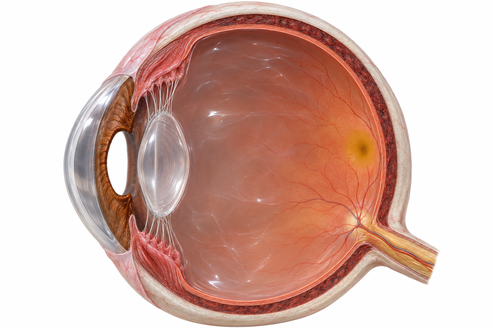

KSSM · FORM 3 SCIENCE1.2 · 8 / 27
Eye: detecting light眼睛：感光
Stimuli and Responses in Humans人类的刺激与反应

9 Retina视网膜10 Yellow spot黄斑11 Blind spot盲点12 Optic nerve视神经Retina + optic nerve视网膜与视神经
The retina produces nerve impulses. The carries them to the brain.视网膜产生神经冲动。把冲动传到脑。
Yellow spot + blind spot黄斑与盲点
The yellow spot gives sharp vision. The blind spot has no photoreceptors.黄斑提供清晰视觉。盲点没有感光细胞。
Rods杆细胞
Rod cells help us see in light. They do not distinguish colours.杆细胞帮助我们在光下看见物体。它们不分辨颜色。
Cones锥细胞
Cone cells support colour vision in bright light. Three types respond best to different ranges of colour.锥细胞在明亮环境下提供色觉。三种类型对不同色光范围最敏感。
STUDENT · 1.2-04